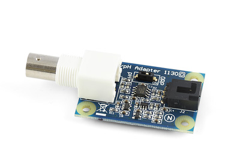
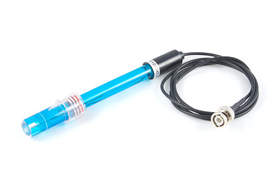
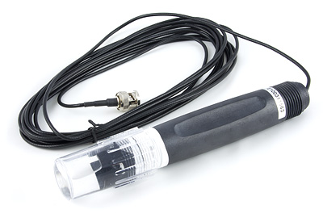
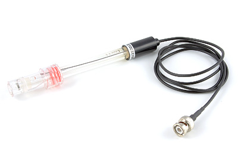

pH/ORP Adapter

Product Features
The pH/ORP Adapter connects any of our pH or ORP probes to the analog input on the board.
Product Description
The pH/ORP Adapter Interfaces to a pH or ORP glass electrode through a BNC connector and feeds the data to an Analog Input on a PhidgetInterface board.
With the pH/ORP Adapter you can:
- Measure pH
- Record Oxidation - Reduction Potential (ORP)
- Monitor ion and gas concentrations
pH Lab Electrode

Product Features
This lab electrode measures the pH of a solution and connects to the pH/ORP Adapter.
Product Description
The sensor is an economical combination electrode ideal for your general-purpose applications in the lab or field. It has the impact-resistant qualities of an epoxy body.
The electrode provides a fast, stable response and is ideal for prolonged pH readings. The sealed, gel-filled design requires virtually no maintenance as there is no need to refill the reference chamber.
The sensor measures 120 mm (length) x 12 mm (diameter), can withstand temperatures up to 80°C and measures pH levels from 0 to 14.
It has a 1 meter cable terminated by a BNC connector.
pH Industrial Electrode

Product Features
This industrial electrode measures the pH of a solution and connects to the pH/ORP Adapter.
Product Description
The sensor is an economical combination electrode ideal for general industrial processes. It is well suited for testing pool water, sea water or underground water. It can also be used at high temperature in strong acid or base environments.
The electrode provides a fast, stable response and is ideal for prolonged pH readings. The sealed, high polymer gel-filled design requires virtually no maintenance as there is no need to refill the reference chamber..
The outer tube is made of strong PPS plastic and is threaded (3/4" NPT pipe thread) for ease of installation.
ORP Lab Electrode

Product Features
This lab electrode measures the ORP of a solution and connects to the pH/ORP Adapter.
Product Description
The sensor is an economical single junction combination electrode ideal for your general-purpose applications in the lab or field. It has the impact-resistant qualities of an epoxy body.
The electrode uses a Teflon diaphragm with a large Pt ring section and provides a fast, stable response. The sealed, gel-filled design requires virtually no maintenance as there is no need to refill the KCL solution.
The sensor measures 120 mm (length) x 12 mm (diameter), can withstand temperatures to 80°C and measures ORP levels from -1500 to +1500mv.
It comes with a 6 meter cable terminated by a BNC connector.
ORP Industrial Electrode
Product Features
This industrial electrode measures the ORP of a solution and connects to the pH/ORP Adapter.
Product Description
The sensor is an economical combination electrode ideal for general industrial processes. It is well suited for testing pool water chlorination, ozone treatment (aquariums, water disinfection).
The electrode provides a fast, stable response and is ideal for prolonged ORP readings. The sealed, high polymer gel-filled design requires virtually no maintenance as there is no need to refill the reference chamber.
The outer tube is made of strong PPS plastic and is threaded (3/4" NPT pipe thread) for ease of installation.
The electrode comes with a 6 meter cable terminated by a BNC connector and a bottle of electrode solution.
We Provide:
- To be accessible, friendly, and helpful at all times.
- To answer the phone when you call, 24/7/365.
- Reply to your emails and support tickets within 24 hours.
- To provide timely information about new hardware.
- To provide all design documentations.
Please fulfill following request form to get more information!